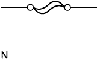
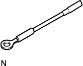
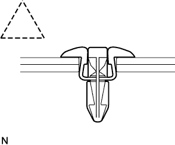
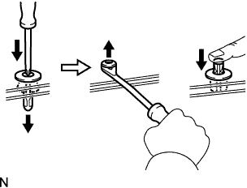
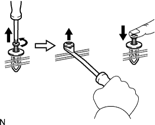
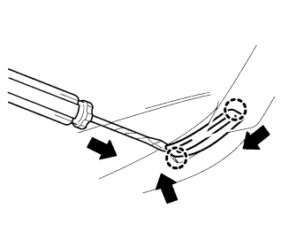
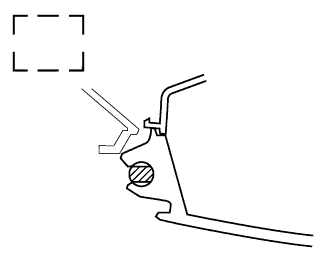
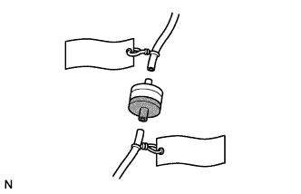

REPAIR INSTRUCTION > PRECAUTION |
| 1.BASIC REPAIR HINT |
HINTS ON OPERATIONS
| 1 | Attire |
|
| 2 | Vehicle protection | Prepare a grille cover, fender cover, seat cover and floor mat before starting the operation. |
| 3 | Safe operation |
|
| 4 | Preparation of tools and measuring gauge | Before starting operation, prepare a tool stand, SST, a gauge, oil and the parts for replacement. |
| 5 | Removal and installation, disassembly and assembly operations |
|
| 6 | Removed parts |
|
| 7* | Checks to perform after work is finished |
|
JACKING UP AND SUPPORTING VEHICLE
Care must be taken when jacking up and supporting the vehicle. Be sure to lift and support the vehicle at the proper locations.
PRECOATED PARTS
| *a | Seal Lock Adhesive |
Precoated parts are bolts and nuts that are coated with a seal lock adhesive at the factory.
If a precoated part is retightened, loosened or moved in any way, it must be recoated with the specified adhesive.
When reusing a precoated part, clean off the old adhesive and dry the part with compressed air. Then apply new seal lock adhesive appropriate to that part.
Some seal lock agents harden slowly. You may have to wait for the seal lock adhesive to harden.
GASKETS
When necessary, use a sealer on gaskets to prevent leaks.
BOLTS, NUTS AND SCREWS
Carefully follow all the specifications for tightening torques. Always use a torque wrench.
FUSES
When inspecting a fuse, check that the wire of the fuse is not broken.
If the wire of a fuse is broken, confirm that there are no shorts in its circuit.
When a fuse is replaced, a fuse with the same amperage rating must be used.
| Illustration | Symbol | Part Name | Abbreviation |
 | FUSE | FUSE | |
|  | MEDIUM CURRENT FUSE | M-FUSE | |
 |  | HIGH CURRENT FUSE | H-FUSE |
|  | FUSIBLE LINK | FL | |
 | CIRCUIT BREAKER | CB |
CLIPS
The removal and installation methods of typical clips used for vehicle body parts are shown in the table below.
| Shape (Example) | Illustration | Procedures |
 |  | Remove clips with a clip remover or pliers. |
 | Remove clips with a clip remover or screwdriver. | |
 | Remove clips with a wide scraper to prevent panel damage. | |
|  |  | Remove clips by pushing the center pin through and prying out the shell. |
 |  | Remove clips by unscrewing the center pin and prying out the shell. |
 | Remove clips by prying out the pin and then prying out the shell. |
CLAWS
The removal and installation methods of typical claws used for vehicle body parts are shown in the table below.
| Shape (Example) | Illustration | Procedures |
 |  | Using a screwdriver, detach the claws and remove the caps or covers. |
 |  | Using a screwdriver, detach the claws and remove the caps or covers. |
 |  | Using a screwdriver, detach the claws and remove the caps or covers. |
HINGE, GUIDE, CLAMP, PIN ETC.
The removal and installation methods of typical hinges, guides, clamps and pins used for vehicle body parts are shown in the table below.
| Shape (Example) | Illustration | Procedures |
|  | Disengage the pins by pulling. | |
 |  | Disengage the pins by pulling. |
 | Remove the clamps with pliers. | |
 |  | Disengage the pins by pulling. |
REMOVAL AND INSTALLATION OF VACUUM HOSES
To disconnect a vacuum hose, pull and twist from the end of the hose. Do not pull from the middle of the hose as this may cause damage.
| *a | INCORRECT |
| *b | CORRECT |
|  |
When disconnecting vacuum hoses, use tags to identify where they should be reconnected.
After completing any hose related repairs, double check that the vacuum hoses are properly connected. The label under the hood shows the proper layout.
When using a vacuum gauge, never force the hose onto a connector that is too large. If a hose has been stretched, it may leak air. Use a step-down adapter if necessary.
TORQUE WHEN USING TORQUE WRENCH WITH EXTENSION TOOL
Use the formula below to calculate special torque values for situations where SST or an extension tool is combined with a torque wrench.
| T' | Reading of torque wrench {N*m (kgf*cm, ft.*lbf)} |
| T | Torque {N*m (kgf*cm, ft.*lbf)} |
| L1 | Length of SST or extension tool {cm (in.)} |
| L2 | Length of torque wrench {cm (in.)} |
| 2.FOR VEHICLES WITH SUPPLEMENTAL RESTRAINT SYSTEM |
SPIRAL CABLE
The steering wheel must be fitted correctly to the steering column with the spiral cable at the neutral position, as cable disconnection and other problems may occur. Refer to the information about correct installation of the steering wheel.
AIRBAG ASSEMBLY
Airbag assembly with pad:
Always place a removed or new airbag assembly with the pad surface facing upward. Placing the airbag assembly with the airbag inflation direction facing downward could cause a serious accident if the airbag inflates. Also, do not place anything on top of the airbag assembly.
Never measure the resistance of the airbag squib. This may cause the airbag to inflate, which could cause a serious injury.
Grease or detergents of any kind should not be applied to the airbag assembly.
Store the airbag assembly in an area where the ambient temperature is below 93°C (200°F), the humidity is not high and there is no electrical noise.
When using electric welding anywhere on the vehicle, disconnect the center airbag sensor connectors. These connectors contain shorting springs. This feature reduces the possibility of the airbag deploying due to currents entering the squib wiring.
When disposing of the vehicle or the airbag assembly by itself, the airbag should be deployed using SST before disposal. Activate the airbag in a safe place away from electrical noise.
SEAT OUTER BELT ASSEMBLY WITH PRETENSIONER
Never measure the resistance of the seat outer belt. This may cause the pretensioner of the seat outer belt to activate, which could cause a serious injury.
Never install the seat outer belt on another vehicle.
Store the seat outer belt in an area where the ambient temperature is below 80°C (176°F), the humidity is not high and there is no electrical noise.
When using electric welding anywhere on the vehicle, disconnect the center airbag sensor connectors (2 pins). These connectors contain shorting springs. This feature reduces the possibility of the pretensioner deploying due to currents entering the squib wiring.
When disposing of a vehicle or the seat outer belt by itself, the pretensioner should be activated before disposal. Activate the pretensioner in a safe place away from electrical noise.
As the seat outer belt is hot after the pretensioner is activated, allow some time for it to cool down sufficiently before disposal. Never apply water to try to cool down the seat outer belt.
Grease, detergents, oil or water should not be applied to the seat outer belt.
AIRBAG SENSOR ASSEMBLY
Never reuse an airbag sensor assembly that has been involved in a collision where the SRS has deployed.
The connectors to the airbag sensor assembly should be connected or disconnected with the sensor placed on the floor. If the connectors are connected or disconnected while the airbag sensor assembly is not placed on the floor, the SRS may activate.
Work must be started at least 90 seconds after the engine switch is turned off and the cable is disconnected from the negative (-) battery terminal, even if only loosening the set bolts of the airbag sensor assembly.
WIRE HARNESS AND CONNECTOR
The SRS wire harness is integrated with the instrument panel wire harness assembly. All the connectors in the system are yellow. If the SRS wire harness becomes disconnected or the connector becomes broken, repair or replace it.
| 3.ELECTRONIC CONTROL |
REMOVAL AND INSTALLATION OF BATTERY CABLE
| *1 | Cable |
| *2 | Negative (-) Battery Terminal |
Before performing electronic work, disconnect the cable from the negative (-) battery terminal to prevent component and wire damage caused by accidental short circuits.
When disconnecting the cable, turn the engine switch off and headlight dimmer switch off and loosen the cable nut completely. Perform these operations without twisting or prying the cable. Then disconnect the cable.
Clock settings*, radio settings, audio system memory, DTCs and other data are cleared when the cable is disconnected from the negative (-) battery terminal. Write down any necessary data before disconnecting the cable.
Certain systems need to be initialized after disconnecting and reconnecting the cable to the negative (-) battery terminal.
HANDLING OF ELECTRONIC PARTS
Do not open the cover or case of an ECU unless absolutely necessary. If the IC terminals are touched, the IC may be rendered inoperative by static electricity.
| *a | INCORRECT |
Do not pull the wires when disconnecting electronic connectors. Pull the connector.
Be careful not to drop electronic components, such as sensors or relays. If they are dropped on a hard surface, they should be replaced.
When cleaning the engine with steam, protect the electronic components, air filter and emissions-related components from water.
Never use an impact wrench to remove or install temperature switches or temperature sensors.
When measuring the resistance of a wire connector, insert the tester probe carefully to prevent the terminals from bending.
| 4.REMOVAL AND INSTALLATION OF FUEL CONTROL PARTS |
PLACE FOR REMOVING AND INSTALLING FUEL SYSTEM PARTS
Work in a location with good air ventilation that does not have welders, grinders, drills, electric motors, stoves, or any other ignition sources.
Never work in a pit or near a pit as vaporized fuel will collect in those places.
REMOVING AND INSTALLING FUEL SYSTEM PARTS
Prepare a fire extinguisher before starting the operation.
To prevent static electricity, install a ground wire to the fuel changer, vehicle and fuel tank, and do not spray the surrounding area with water. Be careful when performing work in this area, as the work surface will become slippery.
Avoid using electric motors, working lights and other electric equipment that can cause sparks or high temperatures.
Avoid using iron hammers as they may create sparks.
Dispose of fuel-contaminated cloths separately using a fire resistant container.
| 5.REMOVAL AND INSTALLATION OF ENGINE INTAKE PARTS |
 |
If any metal particles enter inlet system parts, they may damage the engine.
When removing and installing inlet system parts, cover the openings of the removed parts and engine openings. Use gummed tape or other suitable materials.
When installing inlet system parts, check that no metal particles have entered the engine or the installed parts.
| 6.HANDLING OF HOSE CLAMPS |
| *1 | Clamp Track |
| *2 | Spring Type Clamp |
Before removing the hose, check the clamp position so that it can be reinstalled in the same position.
Replace any deformed or dented clamps with new ones.
When reusing a hose, attach the clamp on the clamp track portion of the hose.
For a spring type clamp, you may want to spread the tabs slightly after installation by pushing in the direction of the arrows as shown in the illustration.
| 7.FOR VEHICLES EQUIPPED WITH MOBILE COMMUNICATION SYSTEMS |
 |
Install the antenna as far away from the ECU and sensors of the vehicle electronic systems as possible.
Install the antenna feeder at least 20 cm (7.87 in.) away from the ECU and sensors of the vehicle electronic systems. For details about ECU and sensor locations, refer to the section of the applicable components.
Keep the antenna and feeder separate from other wiring as much as possible. This will prevent signals from the communication equipment from affecting vehicle equipment and vice versa.
Check that the antenna and feeder are correctly adjusted.
Do not install a high-powered mobile communication system.
| 8.WHEN INSPECTING HEADLIGHT |
When the headlight dimmer switch assembly is set to HEAD, do not touch the discharge headlight's high-voltage socket area.
When the headlights are illuminated, do not cover the headlights for 3 minutes or more.
| *1 | Illumination for 3 minutes or more prohibited if covered |
| 9.FOR VEHICLES EQUIPPED WITH AIR SUSPENSION SYSTEM |
Be sure to turn the height control OFF switch on to switch the height control system off and cancel the auto leveling function when:
When replacing the suspension control ECU, be sure to replace it with a new one. If the suspension control ECU is replaced with a normally functioning one from another vehicle, the vehicle identification information will not match, which may cause the air suspension system to stop operating or have undesirable effects on other systems.
| 10.FOR VEHICLES EQUIPPED WITH TRACTION CONTROL (TRC) AND VEHICLE STABILITY CONTROL (VSC) SYSTEMS |
| 11.WHEN SERVICING FULL-TIME 4WD VEHICLES |
 |
WHEN USING A SPEEDOMETER TESTER
Place the front wheels onto the rollers.
Enter inspection mode to disable TRC and VSC control.
Place the rear wheels on free rollers or use safety stands to allow the rear wheels to rotate freely.
Secure the vehicle with suitable chains or straps.
Start the engine, and then measure the vehicle speed while increasing the speed gradually with the shift lever in D.
After the test is finished, decrease the speed gradually, and then stop the vehicle.
WHEN USING A BRAKE TESTER
Place the wheels to be tested (front or rear) onto the rollers.
Move the shift lever to N.
Start the engine to allow normal brake booster operation.
Operate the brakes to perform the test.
WHEN USING A CHASSIS DYNAMOMETER
Enter inspection mode to disable TRC and VSC control.
Follow the instructions shown in the illustration.
WHEN USING AN ON-VEHICLE BALANCER
Raise the vehicle until all 4 wheels are off the ground.
Support the vehicle with safety stands at an appropriate height. Make sure that vehicle does not lean in any direction, and that the tires are completely clear of the floor.
Place the vibration pick-up unit into position for the wheel to be measured*1.
Release the parking brake.
Check that no dragging force exists when turning each wheel by hand.
Put the wheel balancer in position.
Wheel balance measurement should be done by using both the engine and the wheel balancer drive roller to spin the wheels.
| 12.WHEN TOWING FULL-TIME 4WD VEHICLES |
Use one of the following methods to tow the vehicle.
If the vehicle has trouble with the chassis or drive train, use method 1 (flat bed truck).
The following towing methods shown below are dangerous and can damage the vehicle, so do not use them.

Do not tow the vehicle with only two wheels on the ground.
Do not use a sling-type towing method either from the front or rear.
| 13.WARNING NOTIFICATION FUNCTION (VEHICLES WITH G-BOOK SERVICE CONTRACT) |
Warning notification restraint mode
Enter warning notification restraint mode (using the intelligent tester).
Enter warning notification restraint mode (using the display and navigation module display).
| 14.ALARM NOTIFICATION FUNCTION (VEHICLES WITH G-BOOK SERVICE CONTRACT) |
If the vehicle automatic alarm is activated, the G-BOOK center makes a phone call to the customer.
| 15.STRICT PROHIBITION OF MANUAL EMERGENCY CALL USING EMERGENCY CALL SERVICE (VEHICLES WITH G-BOOK SERVICE CONTRACT) |
Do not make an emergency call when not in emergency situations. For inspections, use the manual maintenance check.
If the telephone switch assembly is operated accidentally:
If the telephone switch assembly is operated accidentally, contact the G-BOOK center to inform the center that the call was made by mistake.
The emergency call cannot be halted or finished from the vehicle. Only the G-BOOK center can halt or finish the call.
If the G-BOOK center is not informed that the call was made by mistake, the center will report to authorities, emergency facilities and dealerships in compliance with its agreements. As a result, emergency vehicles may be dispatched.
| 16.FOR VEHICLES EQUIPPED WITH CATALYTIC CONVERTER |
Use only unleaded gasoline.
Avoid idling the engine for more than 20 minutes.
Avoid performing unnecessary spark tests.
Perform a spark test only when absolutely necessary. Perform this test as rapidly as possible.
While testing, never race the engine unless instructed.
Avoid a prolonged engine compression measurement. Engine compression measurements must be performed as rapidly as possible.
Do not run the engine when the fuel tank is nearly empty. This may cause the engine to misfire and create an extra load on the converter.